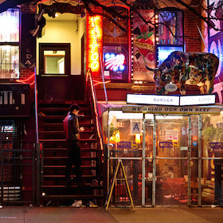

East Village
#ramen #bbq #sogood #casualeats #speakeasy #fancycocktails
Neighborhood Lowdown
This used to be a super dangerous neighborhood, but now popualated with NYU and its students, there are a bunch of fun, safe, and price friendly places to eat and drink.
Public Transit Service: 4,5,6
Cup of Joe

Think Coffee - 248 Mercer Street
Close to NYU and a good place to sit down and study.
Let's get started
Eat
Ippudo
#ramen
By and far the most famous ramen place in New York City (yes, this means more lines). The food and atmosphere should speak for itself, even though I still think that $15 for a bowl of noodles and soup is pretty pricey. Also try their Chao Shao buns, which are also popular with most people. I've heard of one way to avoid the usually unavoidable 1 hr wait (although I haven't tested it): they don't usually take reservations, but if you have the time to walk in during lunch hour, I heard that you may be able to make a reservation. You should do more research on this one though!
Mighty Quinn
#bbq #sogood #casualeats
One of Seb's favorite places when he visited NYC, Mighty Quinn is probably the second best BBQ I've ever had, and you can get it casually. There is usually a line, but it goes pretty fast. I'd recommend the brisket (but that's just because I really like beef). All of the food is delicious and make sure you try all of their free pickled miniside things.
Drink
Raine's Law Room
#speakeasy #fancycocktails
A speakeasy located close-ish to Union Square. I haven't been since the lines have always been long, but you can (and should!) make a reservation in advance. I've heard great things about it.
- liang.val63@gmail.com |
- 02.22.2015 |
- valpal23.blogspot.com |
This website is not intended for public viewing and all photos used are only temporary placeholders.